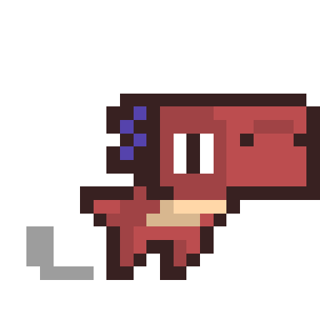
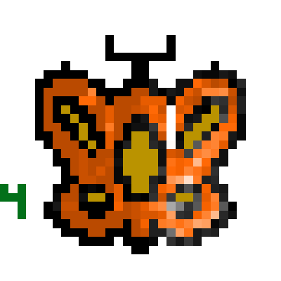
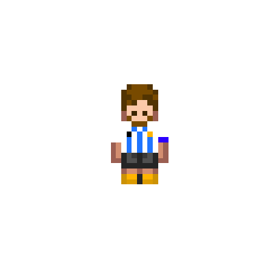

Esta clase creamos una animacion sobre los balones de oro de cristiano ronaldo en Scrach.
En esta clase, usamos piskel para editar personajes para luego crear una fiesta de estos en Scrach.
El Dino
La Mariposa
El Messi
En esta clase creamos la bitacora y la subimos a internet
En esta clase comenzamos la primera parte sobre un juego de fulbo de messi y cristiano
En esta clase terminamos el juego BV
Esta clase hice unna pagina sobre los mejores jugadores de la histoaria